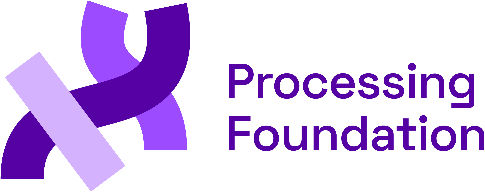
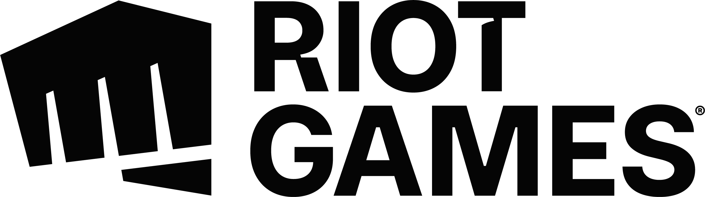

×Funding proposal · Processing Foundation Fellowship Program
Fund the next
generation of
creative coders.
A 2027 Fellowship in partnership with Riot Games — six fellows, two tracks, hundreds of LA youth.
Who we are
We make space
for art, code,
and the communities
that build both.
We promote software learning within the arts, artistic learning within technology, and celebrate the diverse communities that make these fields vibrant, liberatory, and innovative.

×
The Processing Foundation Fellowship
The most radical futures are built by communities pushed to the margins by dominant tech.
Our Fellowship supports those communities in continued self-determination — providing time, space, and resources to build the tools, pedagogies, and software they need.
Time. Space. Resources.

Accomplishment 01 · p5.js + p5.js Editor
people learning to code creatively, in the browser, in 30+ languages.
The Fellowship built and stewards p5.js and the p5.js Web Editor — drastically lowering the barrier to entry for computer programming.
Used by millions across K–12, undergrad CS, and adult learners — free, open source, and accessible from day one.
Recommend an interactive student-friendly sketch.
Accomplishment 02 · Creative Coding Festival
Saber Khan's
Creative Coding
Festival.
A Fellowship-incubated, worldwide gathering for K–12 educators teaching creative code.
Distributed, low-cost, teacher-led — exactly the kind of community infrastructure dominant tech rarely funds.
Accomplishment 03 · Community-embedded fellow
Fellows in residence, with the community.
We place fellows inside local arts and education organizations — not above them.
Community partner — 2 lines
[ Drop in the partner organization name + the fellow's role and one outcome from the video. ]
Why Riot Games · 2027 Fellowship
Built for LA.
Built with LA.
Built to close
the gap.
The 2027 Fellowship partners with LA-based organizations serving under-resourced youth — focused on closing the equity gap in CS education.
- 01 LA-rooted partnerships, working directly with under-resourced youth.
- 02 Prioritizing partners serving Black & Latinx communities.
- 03 Partners well-versed in Social Emotional Learning (SEL).
For fellows & young people
Co-author
software the
world uses.
Fellows mentor youth to co-design and build open-source software — not as users, as contributors.
An exceptional opportunity for young people to become co-authors of globally influential projects — and yes, it looks great on a college application.
The Ask · 2027 Fellowship
Supports 6 fellows, mentorship, supplies, and operational costs for the full 2027 Fellowship cycle.
Full line-item budget: View detailed budget ↗
Where it goes — approximate split
Approximate split — see the linked spreadsheet for line-item totals.
Timeline
We need funding confirmed in June.
Confirming in June gives us time to coordinate with community partners and launch the Fellowship open call in October — with a much higher level of preparedness for both fellows and youth.
June 2026
Funding confirmed.
We finalize partner agreements and program scope.
Jul – Sep
Partnership planning, program scaffolding, recruitment prep.
October
Fellowship open call launches.
4–6 weeks of applications + outreach.
Jan – Sep 2027
Fellows in residence. Youth intensives. Open source tools and learning resources shipped.
Track 01 · Three Riot-funded fellows
Gaming
the System.
Three fellows develop a 2D game-design toolkit in p5.js — making screen-based platformer design more accessible to young people.
Fellows run a summer intensive supporting LA youth to design and ship their own 2D games.
Community partners
Conservatory
for the Arts
Justice Network (AHJN)
Track 02 · Three Riot-funded fellows
Healing
Through Play.
Three fellows develop an SEL-informed toolkit for interactive programming with physical inputs and outputs — accessible to code beginners.
Fellows run a summer intensive supporting LA youth to build meditative interactive installations in p5.js.
Community partners
Theater Company
Dance Company
Justice Network (AHJN)
Build social impact · for LA youth & beyond
Your name on
the work, from
day one.
- 01 Fellow sponsor recognition in fellowship description, press & social.
- 02 Invited as an honoree to LA-based fellowship events.
- 03 Optional seat on the fellowship jury + impact-report meetings.
- 04 Tools published in the 2027 Processing Community Kit — distributed to educators across the US & beyond.
The other half of the room
Mark Cuban
and Jerome
are in.
Help us bridge the gap to launch the 2027 Processing Foundation Fellowship Program.
2027 Fellowship · Confirmed funders
Foundation
Foundation
Foundation
Funding progress · 2027 Fellowship
Thank you
Want to learn
how we measure
impact?
We're here to answer any questions — about administration, evaluation, partner selection, or anything else.
Processing Foundation — A 501(c)(3) non-profit.
Stewards of Processing, p5.js, and Processing Python.